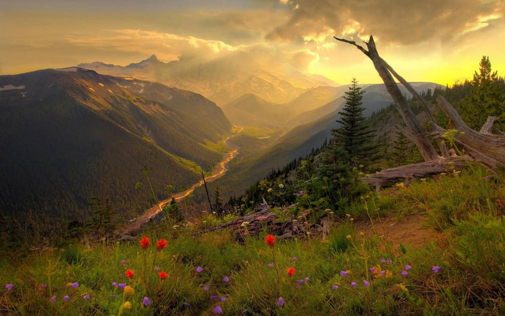
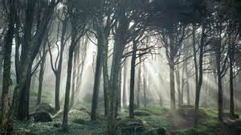
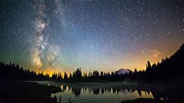

A serene space for reflection.

Phenomenal Woman
Pretty women wonder where my secret lies. I'm not cute or built to suit a fashion model's size But when I start to tell them, They think I'm telling lies. I say, It's in the reach of my arms The span of my hips, The stride of my step, The curl of my lips. I'm a woman Phenomenally. Phenomenal woman, That's me.

A Dream Within A Dream
Take this kiss upon the brow!
And, in parting from you now,
Thus much let me avow--
You are not wrong, who deem
That my days have been a dream;
Yet if hope has flown away
In a night, or in a day,
In a vision, or in none,
Is it therefore the less gone?
All that we see or seem
Is but a dream within a dream.
I stand amid the roar
Of a surf-tormented shore,
And I hold within my hand
Grains of the golden sand--
How few! yet how they creep
Through my fingers to the deep,
While I weep--while I weep!
O God! can I not grasp
Them with a tighter clasp?
O God! can I not save
One from the pitiless wave?
Is all that we see or seem
But a dream within a dream?

The Road Not Taken
Two roads diverged in a yellow wood, And sorry I could not travel both And be one traveler, long I stood And looked down one as far as I could To where it bent in the undergrowth; Then took the other, as just as fair, And having perhaps the better claim, Because it was grassy and wanted wear; Though as for that the passing there Had worn them really about the same, And both that morning equally lay In leaves no step had trodden black. Oh, I kept the first for another day! Yet knowing how way leads on to way, I doubted if I should ever come back. I shall be telling this with a sigh Somewhere ages and ages hence: Two roads diverged in a wood, and I- I took the one less traveled by, And that has made all the difference.